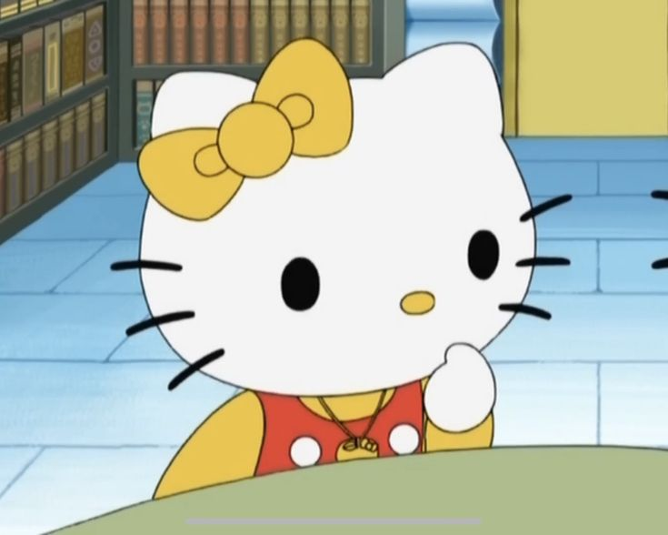

¿Quién es Hello Kitty?
Hello Kitty es un personaje japonés creado por Sanrio en 1974. Es una gatita blanca con un lazo rojo en la oreja y no tiene boca, lo que simboliza que puede transmitir cualquier emoción.
Biografía
Hello Kitty es una gatita blanca, conocida por su icónico lazo rojo en la oreja derecha. A lo largo de los años, se ha convertido en un símbolo mundial de la cultura kawaii (adorable) japonesa. Su rostro simple, sin boca, le permite transmitir diversas emociones, lo que la ha hecho aún más querida y versátil.
A lo largo de los años, Hello Kitty ha aparecido en una amplia variedad de productos, desde ropa y accesorios hasta películas y videojuegos. También ha sido embajadora de varias marcas y ha tenido su propio anime y manga. Su mensaje de amistad y ternura ha cautivado a millones de personas en todo el mundo.
Familia
-
Hermana gemela: Mimmy, quien se distingue por un lazo amarillo.
 -
Padres: George y Mary White.

-
Mascotas:Un pequeño cachorro llamado Charmmy Kitty.

Con su imagen sencilla y su mensaje positivo, Hello Kitty sigue siendo un icono de la cultura pop, con una legión de fans de todas las edades.